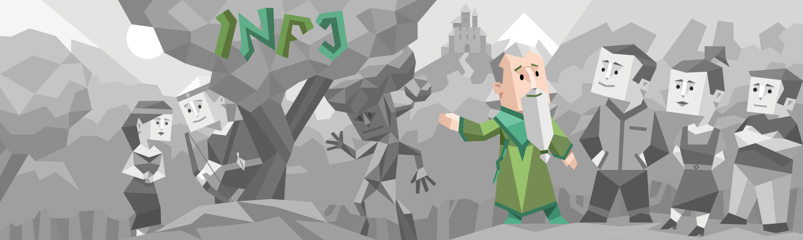

Personal Profile
The three tests help me explore myself; they recommend what is best fit for me and struggle while experiencing the outcome. As an Advocate personality, I enjoy supporting other people to help them gain the best results and not often relish success at the cost of others. There is "not enough" for Advocates when they always explore different perspectives and recommend the best solution for the circumstance. All three test results mention creativity as my key strength, which explains that I can keep the design on-trend and offer product innovation if the client requires it. Besides the power of my personality, I found some of my weaknesses are sensitivity to criticism and preventing the ordinary. I might defend myself from the argument to protect my point of view and find it hard to follow the order of work.
As an Advocate person, I could support teams in optimizing the performance of teamwork and solving problems (if needed). In collaboration, I explored different perspectives and presented the best ideas concept to team members. I will help the team by inspiring ideas through my view and gaining others' respect when my personality is not to enjoy stealing others' work. I am always ready to support other group members who are behind and able to handle teamwork struggles. In team communication, I refuse to join in criticism activities and defuse team conflict. As an Advocate, sometimes I need space alone without any support; this could be a disadvantage when my behaviour could impact the team's overall result. I might not feel interested in working with a group with strict rules, formal frameworks, and dignified duties.
The best role for me in a group is advisors, inspired communicators and creative designers. As advisors, I will help the team identify further information and assistance opportunities and establish a better plan to achieve high scores in the projects. By understanding members' performance, I share work based on members strengths and support other people in trouble. As an inspired communicator, I will prevent teams from conflict and help them not lose effort during teamwork. I will refuse members who follow strict rules because I believe it will make other members feel pressure and duties while they do work. Finally, I can use my strength of creativity to help teams in the design sector. I believe perfect teamwork needs creative presentation to catch more audience attention. A colourful design could help team members feel relaxed and enjoyable with their work. Overall, I expected team members to have an equal quantity of work, respect for each other and good performance to give the best project result.
